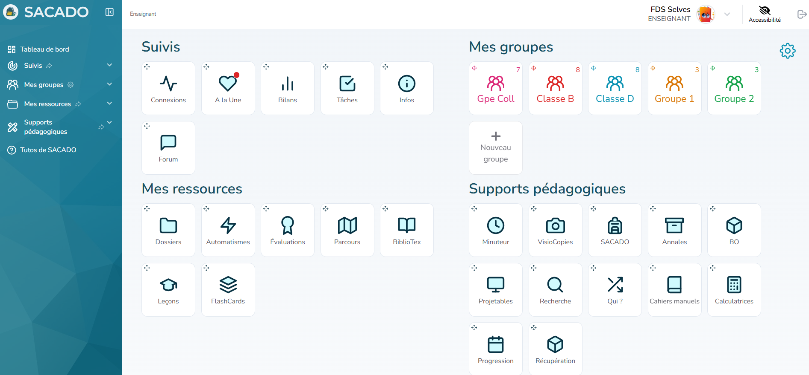
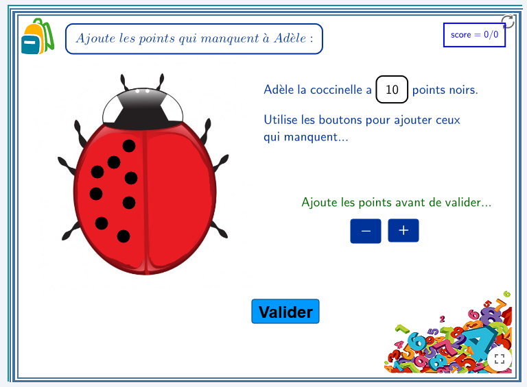
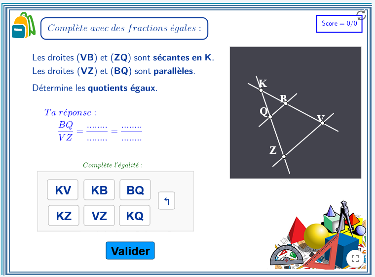
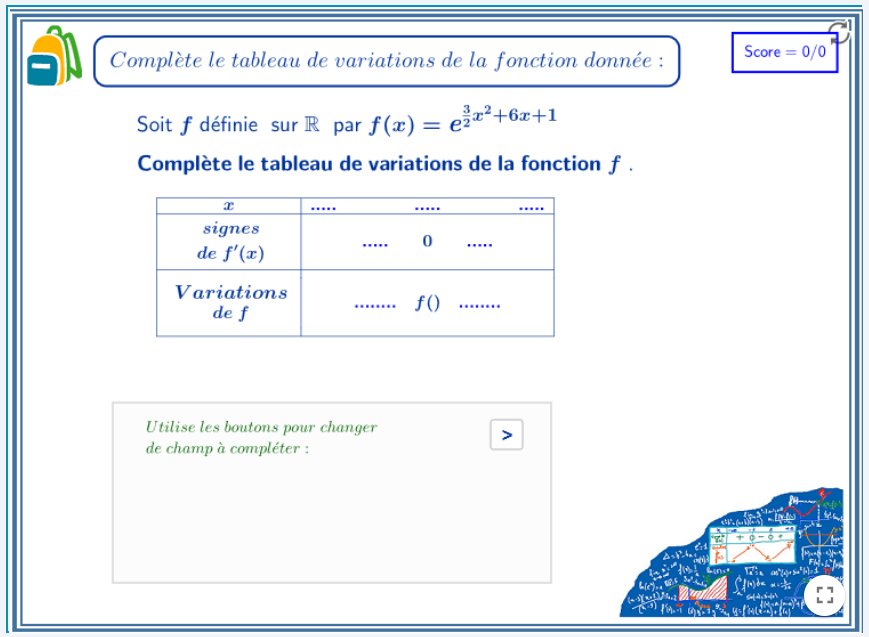
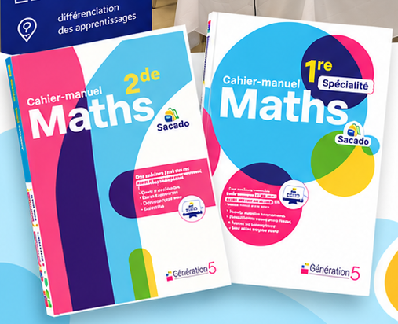
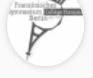
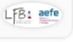
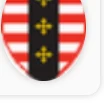
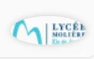
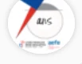

Aligné sur les programmes officiels
Chaque exercice est associé à un objectif d’apprentissage du Bulletin officiel du MEN.
Création de compte gratuite pour les enseignants

↖ Un tableau de bord clair et complet pour tout organiser en un seul espace.
Accessible depuis ordinateur, tablette et mobile ♧
Chaque exercice est associé à un objectif d’apprentissage du Bulletin officiel du MEN.
Cours, exercices, évaluations, annales, fiches synthèses, méthodes…
Visualisez les résultats, les progressions et les points à travailler.
Minuteur, visiocopies, tirage au sort, BiblioTeX/LaTeX, interface Python, calculatrices…
Créez des parcours adaptés, notamment pour les élèves à besoins éducatifs particuliers (BEP).
Des outils et une interface pensés pour des besoins et des environnements variés.
Connexion des enseignants et des élèves depuis le Médiacentre des établissements concernés.
Les données personnelles sont traitées dans le cadre des usages pédagogiques de Sacado.
Accès gratuit jusqu’à 150 élèves. Une offre établissement est proposée au-delà.



Des ressources intégrées à Sacado V2, avec parcours d’exercices, corrections détaillées et liens directs avec les objectifs du BO.


Lycée français de BerlinAllemagne
Lycée français de BarceloneEspagne
Lycée ClaudelOttawa, Canada
Lycée MolièreRio de Janeiro, Brésil
Lycée français René DescartesPhnom Penh, CambodgeRéférences d’utilisation de la plateforme, sans implication de soutien officiel à la candidature. Les logos sont issus des visuels fournis.
Des ressources de mathématiques pour accompagner tous les élèves, du primaire au lycée.
Découvrir la plateforme →